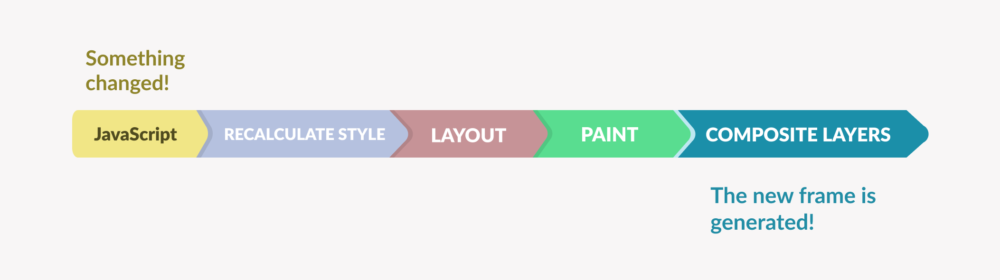
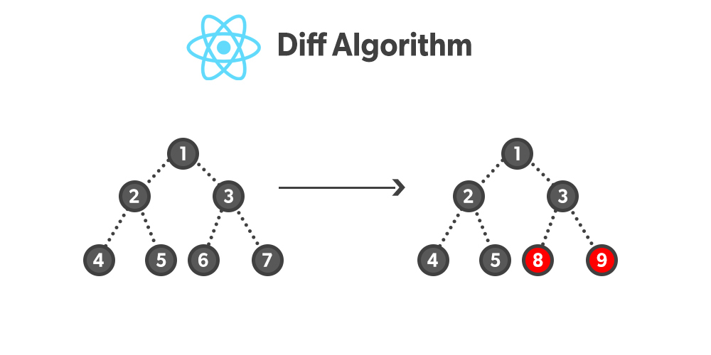

REACT
VirtualDOM
Created by Liubou Hadunova
What is DOM?
DOM stands for "Document Object Model"

Updating the DOM
Every time the DOM gets updated, the updated element and its children have to be rendered again to update the UI of our page.
Virtual DOM
React JS Virtual DOM is a virtual representation of the DOM or a lightweight copy of the actual DOM
How Does the Virtual DOM Work?
In React, everything is treated as a component.
A component can contain a state.
Process of working with the Virtual DOM
1. Creating a Virtual DOM
2. Diffing
3. Reconciliation
1. Creating a Virtual DOM
Whenever a React application is first loaded or rendered i.e component's state changes, a new Virtual DOM is created. This Virtual DOM representation is a tree of React elements
2. Diffing
React compares the new Virtual DOM with the previous one. This process is called "diffing". During diffing, React figures out what has changed between the two Virtual DOMs.
3. Reconciliation
React updates the real DOM to match the new Virtual DOM, but it only updates those objects in the real DOM that changed in the Virtual DOM. This process is called "reconciliation"
React Virtual DOM

The React diff algorithm
The diffing algorithm is heuristic algorithm ( O(n) ) predicated on two suppositions:
1. Elements of different types will produce different trees
2. We can set (using key prop) which elements are static and do not need to be checked
The React diffing process
React checks the root elements for changes and the updates depend on the types of the root elements:
Element in different types: Whenever the type of the element changes in the root, react will scrap the old tree and build a new one i.e a full rebuild of the tree
Elements of the same type: When the type of changed element is the same, React then checks for attributes of both versions and then only updates the node which has changes without any changes in the tree. The component will be updated in the next lifecycle call.
The React diff algorithm
Conclusion
React uses the virtual DOM as a strategy to compute minimal DOM operations when re-rendering the UI
Looking to the future
Currently, React doesn't automatically re-render on state change.
A way to optimise these re-renders is to manually use useMemo(), useCallback(), and memo APIs.
In React 19 will be represent React compiler, which will be manage these re-renders.
React will be decide automatically how and when to change the state and update the UI.